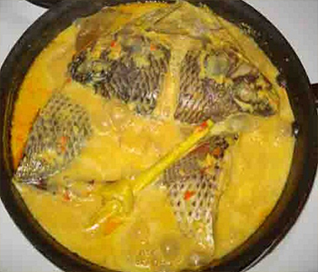

Bahan:
- 1 2 ekor mujair ukuran besar, bersihkan, kerat-kerat,kemudian goreng kering
- santan
Bumbu Halus:
- bawang merah
- bawang putih
- kemiri
- cabe rawit
- cabe merah
- gula
- garam
Rempah Tambahan:
- lengkuas
- daun salam
- daun jeruk
- sereh
Cara Membuat:
- Tumis bumbu halus (kalau saya, sebelum di haluskan di goreng dulu sampai matang untuk mengirangi rasa langu bumbu mentah)
- Masukkan lengkuas, daun salam, daun jeruk, sereh masak sampai matang
- GTambahkan air, kira-bisa merendam ikan
- Masukkan santan, masak sampai matang
- Terakhir masukkan ikan, masak sampai mengental air menyusut
- Yummy..